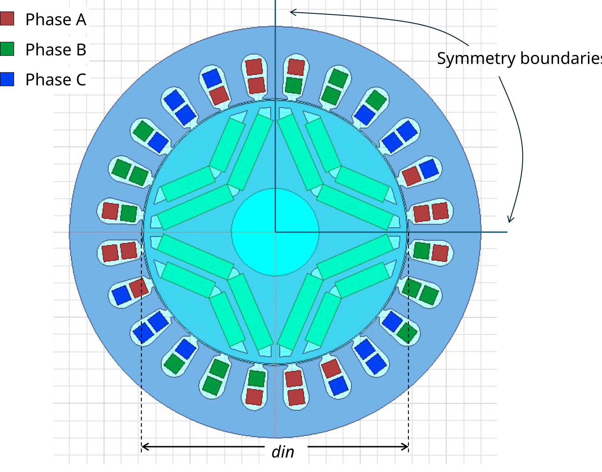

Download this example
Download this example as a Jupyter Notebook or as a Python script.
Internal permanent magnet e-machine#
This example shows how to run a parametric analysis of an electric machine and report torque and loss over the range of swept parameters.
The model applies electrical symmetry and neglects end-winding 3D effects, thereby allowing analysis of one quarter of a 2D cross-section. This common approach greatly accelerates the analysis relative to a full 3D analysis. The model cross-section is shown below.

Keywords: Maxwell 2D, transient, motor
Prerequisites#
Perform imports#
[1]:
import csv
import os
import tempfile
import time
import ansys.aedt.core
from ansys.aedt.core.examples.downloads import download_file
Define constants#
Constants help ensure consistency and avoid repetition throughout the example.
[2]:
AEDT_VERSION = "2026.1"
NUM_CORES = 4
NG_MODE = False # Open AEDT UI when it is launched.
Create temporary directory#
Create a temporary working directory. The name of the working folder is stored in temp_folder.name.
Note: The final cell in the notebook cleans up the temporary folder. If you want to retrieve the AEDT project and data, do so before executing the final cell in the notebook.
[3]:
temp_folder = tempfile.TemporaryDirectory(suffix=".ansys")
Model preparation#
Download the example project file#
Many PyAEDT examples use project files or data from the Ansys example data repository in GitHub.
Note: You can update
settingsas shown below to work with a local copy of the example-data repository. Replace'/home/user/repo/example-data'with the path to the cloned"example-data"repository.
from ansys.aedt.core import settings
settings.use_example_data = True
settings.local_example_folder = r'/home/user/repo/example-data'
Retrieve the example model and place it in the project folder.
[4]:
aedt_file = download_file(
source="maxwell_motor_optimization",
name="IPM_optimization.aedt",
local_path=temp_folder.name,
)
Launch Maxwell 2D#
Launch AEDT and Maxwell 2D after first setting up the project, the version and the graphical mode.
[5]:
m2d = ansys.aedt.core.Maxwell2d(
project=aedt_file,
version=AEDT_VERSION,
new_desktop=True,
non_graphical=NG_MODE,
)
PyAEDT INFO: Parsing C:\Users\ansys\AppData\Local\Temp\tmpf111f4v8.ansys\pyaedt\maxwell_motor_optimization\IPM_optimization.aedt.
PyAEDT INFO: Python version 3.10.11 (tags/v3.10.11:7d4cc5a, Apr 5 2023, 00:38:17) [MSC v.1929 64 bit (AMD64)].
PyAEDT INFO: PyAEDT version 1.1.dev0.
PyAEDT INFO: Initializing new Desktop session.
PyAEDT INFO: AEDT version 2026.1.
PyAEDT INFO: New AEDT session is starting on gRPC port 54757.
PyAEDT INFO: File C:\Users\ansys\AppData\Local\Temp\tmpf111f4v8.ansys\pyaedt\maxwell_motor_optimization\IPM_optimization.aedt correctly loaded. Elapsed time: 0m 0sec
PyAEDT INFO: Starting new AEDT gRPC session on port 54757.
PyAEDT INFO: Launching AEDT server with gRPC transport mode: wnua
PyAEDT INFO: Electronics Desktop started on gRPC port 54757 after 10.2 seconds.
PyAEDT INFO: AEDT installation Path C:\Program Files\ANSYS Inc\v261\AnsysEM
PyAEDT INFO: Connected to AEDT gRPC session on port 54757.
PyAEDT INFO: Non-graphical mode detected. Disabling Desktop logs.
PyAEDT INFO: Project IPM_optimization has been opened.
PyAEDT INFO: Active Design set to M2D_Transient
PyAEDT INFO: AEDT objects correctly read
Define parameters#
Permanent magnet material may be used as a degree of freedom for the optimization. The material is modified in maxwell using the parameter "mat_index"
mat_index |
Material |
|---|---|
0 |
NdFeB (“XG196/96_2DSF1.000_X”) |
1 |
NdFe30 |
2 |
NdFe35 |
[6]:
m2d["mat_sweep"] = '["XG196/96_2DSF1.000_X", "NdFe30", "NdFe35"]'
m2d["mat_index"] = 0
Assign the material definition to the permanent magnets#
Retrieve all permanent magnet objects using the string “Mag” for the object name and assign the material definition "mat_sweep[mat_index]". This allows the material assignment to be modified by changing the value of mat_index in Maxwell 2D.
[7]:
magnets = [o for name, o in m2d.modeler.objects_by_name.items() if "Mag" in name]
for mag in magnets:
mag.material_name = "mat_sweep[mat_index]"
PyAEDT INFO: Modeler2D class has been initialized!
PyAEDT INFO: Modeler class has been initialized! Elapsed time: 0m 0sec
PyAEDT INFO: Parsing design objects. This operation can take time
PyAEDT INFO: Refreshing bodies from Object Info
PyAEDT INFO: Bodies Info Refreshed Elapsed time: 0m 0sec
PyAEDT INFO: 3D Modeler objects parsed. Elapsed time: 0m 0sec
PyAEDT INFO: Materials class has been initialized! Elapsed time: 0m 0sec
Specify parametric analysis#
The following code demonstrates how to set up a parametric study that varies:
"din": Stator inner diameter."mat_index": Material of the permanent magnet.
Variations can be added using the add_variation() method to extend the scope of the parametric investigation. This approach provides a powerful interface for advanced design of experiments and optimization.
[8]:
param_sweep = m2d.parametrics.add( # Define parametric analysis.
variable="bridge", # Single value for "bridge"
start_point="0.5mm",
variation_type="SingleValue",
)
param_sweep.add_variation( # Sweep "din".
sweep_variable="din",
start_point=78,
end_point=80,
step=10,
units="mm",
variation_type="LinearStep",
)
param_sweep.add_variation( # Single value for "phase_advance".
sweep_variable="phase_advance",
start_point=45,
units="deg",
variation_type="SingleValue",
)
param_sweep.add_variation(sweep_variable="Ipeak", start_point=200, units="A", variation_type="SingleValue") # Single value for "Ipeak".
param_sweep.add_variation( # Sweep PM material assignment.
sweep_variable="mat_index",
start_point=0,
end_point=2,
step=1,
variation_type="LinearStep",
)
[8]:
True
CSV file import for parametric analysis#
The parametric analysis created above could also be defined from a table of comma-separated values. The header of the CSV file contains the parameter names as shown below.
CSV file content:
*, mat_index, bridge, Ipeak, phase_adv, din
1, 0, 0.5mm, 200A, 45deg, 78mm
2, 1, 0.5mm, 200A, 45deg, 78mm
3, 2, 0.5mm, 200A, 45deg, 78mm
4, 0, 0.5mm, 200A, 45deg, 80mm
5, 1, 0.5mm, 200A, 45deg, 80mm
6, 2, 0.5mm, 200A, 45deg, 80mm
Table of parametric variations:
SimulationID |
mat_index |
bridge |
Ipeak |
phase_adv |
din |
|---|---|---|---|---|---|
1 |
0 |
0.5mm |
200 A |
45 ° |
78 mm |
2 |
1 |
0.5mm |
200 A |
45 ° |
78 mm |
3 |
2 |
0.5mm |
200 A |
45 ° |
78 mm |
4 |
0 |
0.5mm |
200 A |
45 ° |
80 mm |
5 |
1 |
0.5mm |
200 A |
45 ° |
80 mm |
6 |
2 |
0.5mm |
200 A |
45 ° |
80 mm |
The parametric analysis can be imported using the following method:
m2d.parametrics.add_from_file("/path/to/file.csv")
Run parametric analysis#
To speed up the analysis, the time step is increased in the transient setup. This can be done by modifying the TimeStep property of the transient setup. Note: In a real case scenario, the time step should be: 1/freq_e/360. To simulate a real case scenario, please comment out the following line.
[9]:
m2d.setups[0].props["TimeStep"] = "1/freq_e/45"
param_sweep.analyze(cores=NUM_CORES)
PyAEDT INFO: Project IPM_optimization Saved correctly
PyAEDT INFO: Key Desktop/ActiveDSOConfigurations/Maxwell 2D correctly changed.
PyAEDT INFO: Solving Optimetrics
PyAEDT INFO: Design setup Parametric_PGFMPS solved correctly in 0.0h 2.0m 42.0s
PyAEDT INFO: Key Desktop/ActiveDSOConfigurations/Maxwell 2D correctly changed.
[9]:
True
Postprocess#
Create reports to view torque and loss.
Plot torque for all PM materials with din set to 78mm.
[10]:
report_torque_constant_din = m2d.post.create_report(
expressions="Moving1.Torque",
domain="Sweep",
variations={
"bridge": "All",
"din": "78mm",
"Ipeak": "All",
"phase_advance": "All",
"mat_index": "All",
},
primary_sweep_variable="Time",
plot_type="Rectangular Plot",
plot_name="torque_constant_din",
)
PyAEDT INFO: Parsing C:\Users\ansys\AppData\Local\Temp\tmpf111f4v8.ansys\pyaedt\maxwell_motor_optimization\IPM_optimization.aedt.
PyAEDT INFO: File C:\Users\ansys\AppData\Local\Temp\tmpf111f4v8.ansys\pyaedt\maxwell_motor_optimization\IPM_optimization.aedt correctly loaded. Elapsed time: 0m 0sec
PyAEDT INFO: aedt file load time 0.2971322536468506
PyAEDT INFO: PostProcessor class has been initialized! Elapsed time: 0m 1sec
PyAEDT INFO: PostProcessor class has been initialized! Elapsed time: 0m 0sec
PyAEDT INFO: Post class has been initialized! Elapsed time: 0m 0sec
PyAEDT WARNING: No report category provided. Automatically identified Transient
Plot torque vs "din" with the PM material set to NdFeB ("XG196/96_2DSF1.000_X").
[11]:
report_torque_constant_mat = m2d.post.create_report(
expressions="Moving1.Torque",
domain="Sweep",
variations={
"bridge": "All",
"din": "All",
"Ipeak": "All",
"phase_advance": "All",
"mat_index": "0",
},
primary_sweep_variable="Time",
plot_type="Rectangular Plot",
plot_name="torque_constant_mat",
)
PyAEDT WARNING: No report category provided. Automatically identified Transient
The same approach is applied to visualize the loss in all solids and the core. Quantities "SolidLoss" and "CoreLoss" are calculated from the field solution and were pre-defined in the project.
[12]:
report_solid_loss_constant_din = m2d.post.create_report(
expressions="SolidLoss",
domain="Sweep",
variations={
"bridge": "All",
"din": "78mm",
"Ipeak": "All",
"phase_advance": "All",
"mat_index": "All",
},
primary_sweep_variable="Time",
plot_type="Rectangular Plot",
plot_name="solid_loss_constant_din",
)
report_solid_loss_constant_mat = m2d.post.create_report(
expressions="SolidLoss",
domain="Sweep",
variations={
"bridge": "All",
"din": "All",
"Ipeak": "All",
"phase_advance": "All",
"mat_index": "0",
},
primary_sweep_variable="Time",
plot_type="Rectangular Plot",
plot_name="solid_loss_constant_mat",
)
report_core_loss_constant_din = m2d.post.create_report(
expressions="CoreLoss",
domain="Sweep",
variations={
"bridge": "All",
"din": "78mm",
"Ipeak": "All",
"phase_advance": "All",
"mat_index": "All",
},
primary_sweep_variable="Time",
plot_type="Rectangular Plot",
plot_name="core_loss_constant_din",
)
report_core_loss_constant_mat = m2d.post.create_report(
expressions="CoreLoss",
domain="Sweep",
variations={
"bridge": "All",
"din": "All",
"Ipeak": "All",
"phase_advance": "All",
"mat_index": "0",
},
primary_sweep_variable="Time",
plot_type="Rectangular Plot",
plot_name="core_loss_constant_mat",
)
PyAEDT WARNING: No report category provided. Automatically identified Transient
PyAEDT WARNING: No report category provided. Automatically identified Transient
PyAEDT WARNING: No report category provided. Automatically identified Transient
PyAEDT WARNING: No report category provided. Automatically identified Transient
Report the torque and loss for all variations.
[13]:
torque_data = m2d.post.get_solution_data(
expressions=["Moving1.Torque"],
setup_sweep_name=m2d.nominal_sweep,
domain="Sweep",
variations={
"bridge": "All",
"din": "All",
"Ipeak": "All",
"phase_advance": "All",
"mat_index": "All",
},
primary_sweep_variable="Time",
report_category="Standard",
)
solid_loss_data = m2d.post.get_solution_data(
expressions=["SolidLoss"],
setup_sweep_name=m2d.nominal_sweep,
domain="Sweep",
variations={
"bridge": "All",
"din": "All",
"Ipeak": "All",
"phase_advance": "All",
"mat_index": "All",
},
primary_sweep_variable="Time",
report_category="Standard",
)
core_loss_data = m2d.post.get_solution_data(
expressions=["CoreLoss"],
setup_sweep_name=m2d.nominal_sweep,
domain="Sweep",
variations={
"bridge": "All",
"din": "All",
"Ipeak": "All",
"phase_advance": "All",
"mat_index": "All",
},
primary_sweep_variable="Time",
report_category="Standard",
)
PyAEDT INFO: Solution Correctly loaded. Elapsed time: 0m 0sec
PyAEDT INFO: Solution Correctly parsed. Elapsed time: 0m 0sec
PyAEDT INFO: Solution Correctly loaded. Elapsed time: 0m 0sec
PyAEDT INFO: Solution Correctly parsed. Elapsed time: 0m 0sec
PyAEDT INFO: Solution Correctly loaded. Elapsed time: 0m 0sec
PyAEDT INFO: Solution Correctly parsed. Elapsed time: 0m 0sec
Calculate the time-averaged torque and loss for each variation and export the data to a .csv file.
[14]:
csv_data = []
for var in core_loss_data.variations:
torque_data.active_variation = var
core_loss_data.active_variation = var
solid_loss_data.active_variation = var
torque_values = torque_data.get_expression_data(formula="magnitude")[1]
core_loss_values = core_loss_data.get_expression_data(formula="magnitude")[1]
solid_loss_values = solid_loss_data.get_expression_data(formula="magnitude")[1]
torque_data_average = sum(torque_values) / len(torque_values)
core_loss_average = sum(core_loss_values) / len(core_loss_values)
solid_loss_average = sum(solid_loss_values) / len(solid_loss_values)
csv_data.append(
{
"active_variation": str(torque_data.active_variation),
"average_torque": str(torque_data_average),
"average_core_loss": str(core_loss_average),
"average_solid_loss": str(solid_loss_average),
}
)
with open(os.path.join(temp_folder.name, "motor_optimization.csv"), "w", newline="") as csvfile:
fields = [
"active_variation",
"average_torque",
"average_core_loss",
"average_solid_loss",
]
writer = csv.DictWriter(csvfile, fieldnames=fields)
writer.writeheader()
writer.writerows(csv_data)
Finish#
Save the project#
[15]:
m2d.save_project()
m2d.release_desktop()
# Wait 3 seconds to allow AEDT to shut down before cleaning the temporary directory.
time.sleep(3)
PyAEDT INFO: Project IPM_optimization Saved correctly
PyAEDT INFO: Desktop has been released and closed.
Clean up#
All project files are saved in the folder temp_folder.name. If you’ve run this example as a Jupyter notebook, you can retrieve those project files. The following cell removes all temporary files, including the project folder.
[16]:
temp_folder.cleanup()
Download this example
Download this example as a Jupyter Notebook or as a Python script.